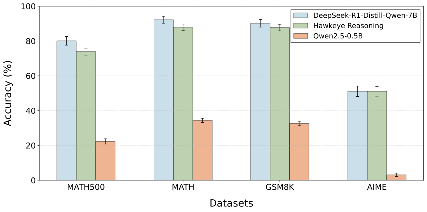

Abstract
Chain-of-Thought (CoT) reasoning has demonstrated remarkable effectiveness in enhancing the reasoning abilities of large language models (LLMs). However, its efficiency remains a challenge due to the generation of excessive intermediate reasoning tokens, which introduce semantic redundancy and overly detailed reasoning steps.
Hawkeye is an efficient reasoning framework with Model Collaboration, where a large model produces concise instructions to guide a lightweight model in response preparation and generation. Hawkeye quantifies redundancy in LRM and distills high-density information via RLHF, achieving up to 67.6% reduction in reasoning tokens while maintaining comparable response quality.
Key Features
- Efficiency: Achieves up to 67.6% reduction in reasoning tokens
- Cost Reduction: Reduces serving cost by up to 62%
- Speed: Accelerates end-to-end reasoning by up to 3.4×
- Quality: Maintains comparable response quality while improving clarity and coherence
- Flexibility: Supports various model combinations and system prompts
Architecture
Hawkeye introduces model collaboration, wherein a powerful model generates concise reasoning instructions, and small models expand them into human-readable responses.
Performance Results
Hawkeye achieves comparable accuracy to baseline models while significantly reducing computational cost:
Cost Efficiency
Hawkeye reduces inference cost by up to 60% while maintaining performance. Our evaluation shows that Hawkeye can achieve comparable response quality using only 35% of the full CoTs:

Methodology
We observe that CoT reasoning often contains substantial redundancy due to:
- Repeated hints
- Filler phrases (e.g., "Well," "Let me double-check")
- Overly fine-grained steps

GRPO Training
Hawkeye employs GRPO (Group Relative Policy Optimization) to fine-tune models for compressed CoT generation:


The reward function is designed as:
R = EM(â, a) - λ × max(0, len(c) - 0.3 × len(c_orig))²Where:
EM(â, a): Exact match score between generated and ground truth answerslen(c): Token count of generated CoTlen(c_orig): Token count of original CoTλ: Length penalty weight
Evaluation Results
Multi-Dataset Performance:
| Task | Model | Accuracy(%) | Response Length (Tokens) |
|---|---|---|---|
| GSM8K | DeepSeek-R1-Distill-Qwen-7B | 85.65 ± 0.63 | 477.98 ± 0.89 |
| GSM8K | Hawkeye | 82.11 ± 0.48 | 413.42 ± 2.19 |
| GPQA Diamond | DeepSeek-R1-Distill-Qwen-7B | 38.72 ± 3.56 | 1975.19 ± 8.90 |
| GPQA Diamond | Hawkeye | 39.23 ± 3.10 | 2006.30 ± 2.23 |
| MATH | DeepSeek-R1-Distill-Qwen-7B | 91.47 | 751.5 |
| MATH | Hawkeye | 87.45 | 208.33 |